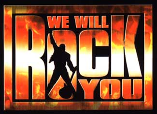

Important Announcement

On Saturday 31st May 2014, We Will Rock You closed at the Dominion Theatre in London's West End, bringing to an end a 12-year run.
On a personal note, it has given me a great amount of pleasure to run the site from its inception in October 2003, and through We Will Rock You's incredible fan-base and community, I have met some of the best friends anyone could hope for.
I would also like to take this opportunity to thank everyone involved with We Will Rock You during its 12-year run at the Dominion and on its UK tours.
Craig,
WWRY-London.co.uk Site Admin